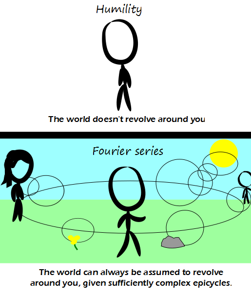

Comic JK 903
When I Feel Like It
⇤
<
?
>
⇥

⇤
<
?
>
⇥
Forum
.
RSS
.
Digg
.
Facebook
.
Reddit
.
Twitter
.
Stumbleupon
Enter your thoughts on number 903 here. Please, no spamming, trolling, bowing, or epicycles. Bowing to popular demand, Comic JK will hereafter be Tuesday, Thursday, and Saturday to address the lack of technical humor on these days. >5 days per week would be even better. >>Actually, eight days per week would be even better! >>>Eight days a week, I lOOo_oOOo_oOOve you. >>>+1 >>>Thanks for taking a bow, but even more popular would be two comics per day, or even one per hour! Surely isn't too much to ask, is it? Honestly, thanks, that's highly appreciated! :) >>>>You are right, while I am not, because I can't seperate "your" and "you are". Hence my argument is invalid and I eat shit. I know that their would be no drop in quality. >>>>> For all intensive purposes, the quality would be exceptable. >>>>>> "intents and purposes"..."acceptable" >>>>>>> whoosh! >>>>>>> in this box you can just fix other people's mistake's. I don't know if that count's as being grammer natsi since no body ever seas it. >>>>>>>> Oh man... Not fixing those because I'm sure it is deliberate since iit is hilarious. (until someone changes it to be something else of course) >>>>>>>> I do natsi how that would be a porblem? >>>>>>>>> Wel, I don't tink grammer natsis are reicht people. >>>>>>>We were talking about a drop in quality, while intentionally including mistakes... irony... pay attention people! It's no fun when you have to explain. What days was it before? > mon->fri >> Do you mean [mon..fri] or (mon, fri)? >>> Monday to Friday inclusive, rather than mapping Monday to Friday (the other option - Monday and Friday - isn't a valid interpretation of the syntax). So, weekdays. >>>> The other option is the fri belonging to mon. T-T-S means delaying them an extra day, right? >Tomorrow it will change to F-S-M. Noodly goodness! >>+4.7 >>I feel like I'm reading a BDSM dictionary. >>> ... >>>>do angry BDSM enthusiasts throw the book at each other... ? As long as I can still post insightful tidbits about your slutty anus's exploits at least 5 days a week, I don't see this as a problem.